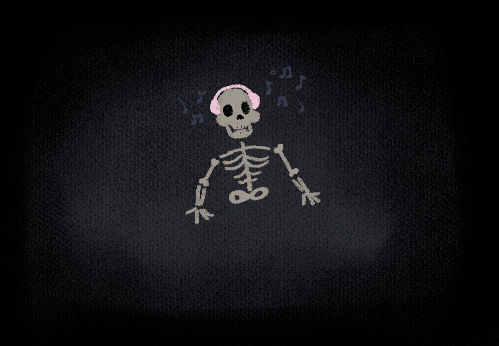

Okay, fine……….well, for starters….. How will I die? I dont want to know, but at the same time… I do? I'm scared of what it will be like, I'm more scared of dying of old age. I have never been the same after I had a woman so clearly say to me, during her last days, “I’m scared.”. I thought that the fear goes away when you get older. Does it not? I mean, she didn't say what she was scared of, but that could be the only thing she was thinking of while she lived out her last days in her bed. She knew it was coming, and-
Woah there, this is getting a little heavy, can we move on to a different question??